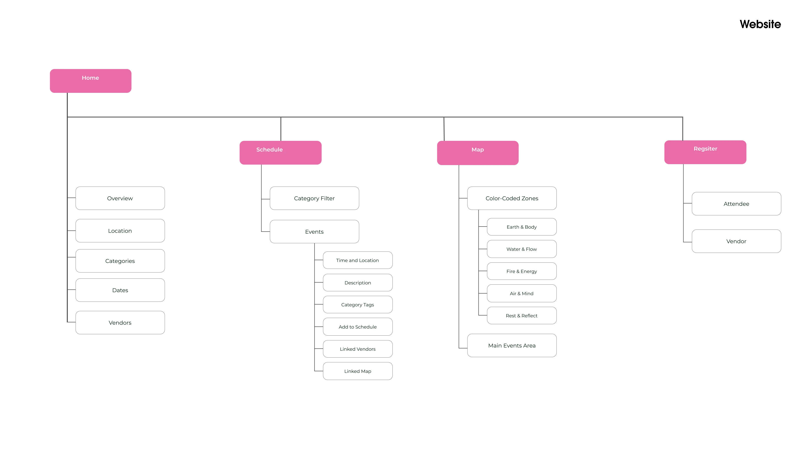
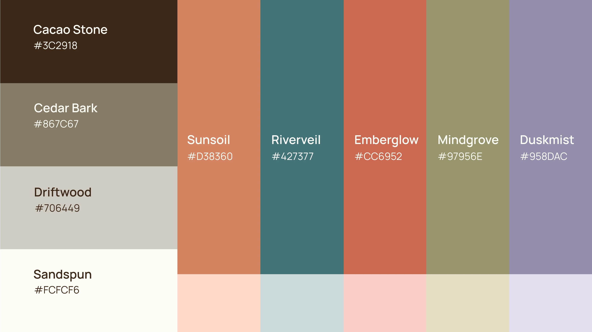
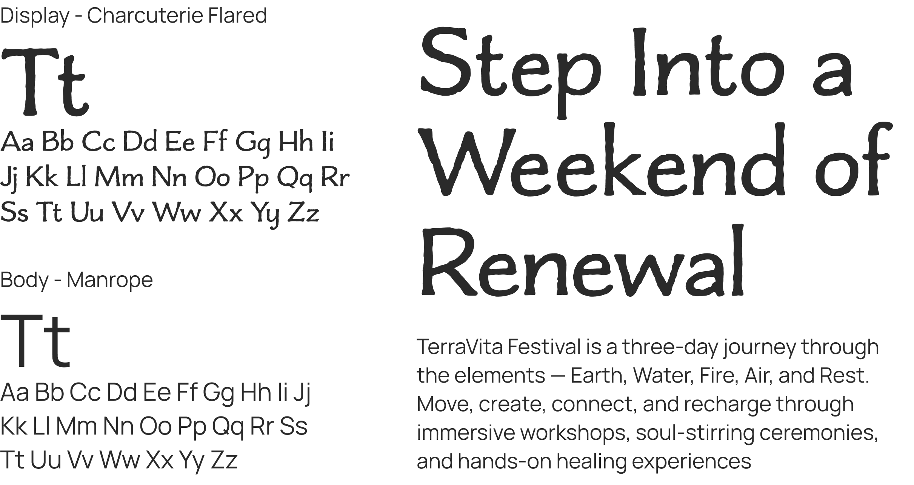
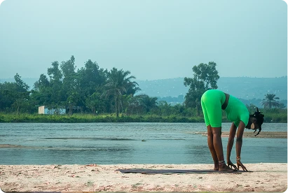
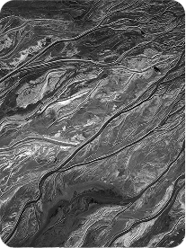
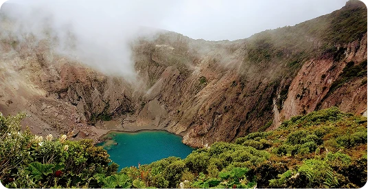
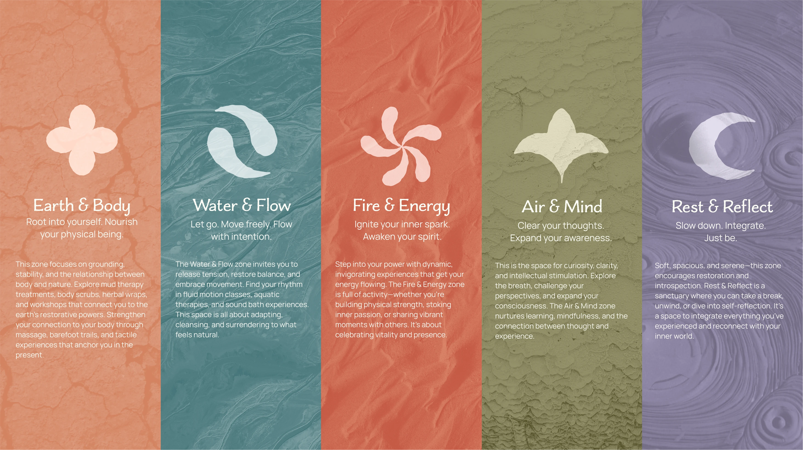
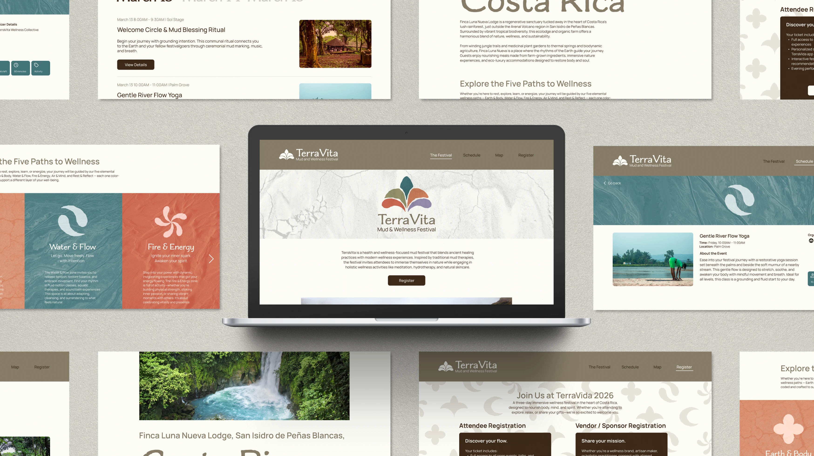
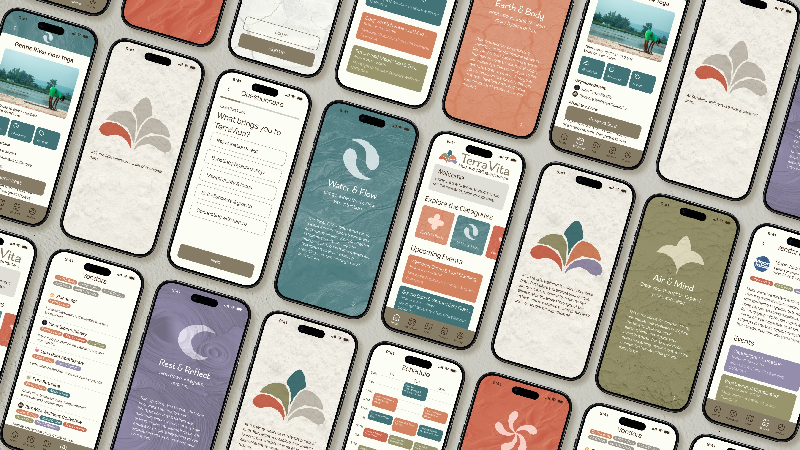
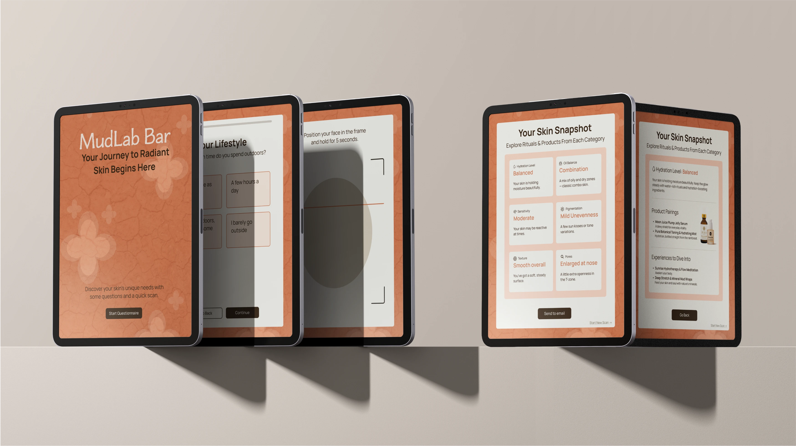

& Web Designer • Illustrator
TerraVita Mud and Wellness Festival Digital Ecosystem
Services
Brand Identity, Experience Design,
UX/UI Design
Role
Researcher, UX/UI Designer,
Brand Designer
Overview
TerraVita is an innovative three-day immersive wellness festival in Costa Rica that celebrates the connection between nature, ritual, and community. The festival features a comprehensive digital ecosystem designed to enhance the experience for both attendees and vendors through seamlessly integrated platforms. This includes a central festival website, a vendor dashboard for booth management and scheduling, a personalized mobile app with personalized scheduling, and an on-site MudLab Bar featuring custom skin analysis technology and personalized ritual care recommendations.
Challenge
The primary challenge was creating a cohesive digital experience for multiple user types—festival attendees seeking personalized wellness journeys and vendors managing their presence—while maintaining the festival's organic, nature-connected ethos. This required an intuitive system that could guide users through diverse wellness offerings without overwhelming them and provide vendors with powerful tools to connect with their ideal customers.
Research and Analysis
To develop an authentic and culturally grounded mud festival experience in Costa Rica, a comprehensive analysis was conducted to examine existing mud-based events, Costa Rican design principles, and the country's rich cultural heritage.
Competitive Landscape
The analysis revealed three distinct approaches to mud-based experiences. The Boryeong Mud Festival in South Korea is a large-scale event attracting millions, with strengths in mineral-rich mud and economic impact, but facing challenges with overcrowding and environmental sustainability. Thermal mud spas globally, including wellness-focused destinations like the Dead Sea, Blue Lagoon, and Costa Rican volcanic springs, offer therapeutic treatments but lack festival energy and community engagement. The PA Mudd Fest in the USA provides a family-oriented outdoor recreation event with strong community bonding but limited scale and recognition.
Key insights from this competitive analysis include the need to balance festival excitement with wellness authenticity, manage environmental impact, and create distinctive cultural differentiation.


Costa Rican Cultural Context
Costa Rica's design philosophy centers on three core principles that should inform the festival concept. First is biophilia and nature integration, emphasizing deep connection to natural surroundings through living walls, open-air spaces, and local flora and fauna motifs. Second is sustainability, incorporating eco-friendly practices including solar power, rainwater harvesting, and native planting—critical given threats identified in the competitive analysis.
The Costa Rican oxcart, or carreta, emerged as a national symbol of Costa Rica. Dating to the mid-19th century, these carretas were used to transport coffee from the Central Valley to coastal ports, becoming synonymous with Costa Rican perseverance and craftsmanship. They also embody artistic heritage through bright, hand-painted geometric patterns, flowers, and animals, with each cart telling a unique story through its decoration. As a living tradition, they are still produced and featured in parades and celebrations.
User Personas
Three distinct personas were created to represent TerraVita's core audience segments. Together, these personas highlight the festival's challenge of serving multiple stakeholder groups: attendees seeking flexibility and authenticity, vendors needing accessible platforms for product demonstration, and sponsors requiring innovative activation opportunities that stand out in a competitive wellness marketplace.


Ideation and Concept Development
The TerraVita project addressed a key challenge in wellness festivals: the lack of personalization and meaningful connections between attendees and vendors. The solution was a digital ecosystem bridging immersive physical experiences with intelligent guidance. Traditional festivals face several issues, including overwhelmed attendees, vendors struggling to reach ideal customers, limited post-festival engagement, and friction in navigation.
The solution centered on four interconnected touchpoints: a central festival website for registration and discovery, a consumer app with personalized recommendations via a Mud Wellness Type quiz, a vendor portal for booth management and sponsorship, and the MudLab Experience combining AI skin analysis with custom mud mask recommendations.
Information Architecture
To create a cohesive digital ecosystem for TerraVita, comprehensive site maps were developed for the central festival website, the consumer-facing mobile app, and the vendor dashboard. Each platform was designed with distinct user needs while maintaining seamless connections between them. All three platforms share a unified information architecture built around five wellness categories (Earth & Body, Water & Flow, Fire & Energy, Air & Mind, Rest & Reflect), creating intuitive navigation through color-coded categories and tagged filtering. This interconnected structure allows attendees to seamlessly discover content on the website, personalize their experience through the app, and engage with vendors both digitally and on-site.



Low-Fidelity Prototyping
Following the information architecture phase, low-fidelity wireframes were developed to visualize the core user flows across all three platforms. This stage focused on establishing layout, hierarchy, navigation, and interactions. The mobile app prototypes prioritized the onboarding experience, as this would set the foundation for personalization throughout the festival journey. Website prototypes emphasized discovery and conversion. The B2B vendor dashboard wireframes focused on streamlining complex tasks into intuitive workflows. Wireframes for the digital extension explored how an on-site AI skin analysis kiosk would guide users through personalized recommendations.


Visual Identity
The visual identity for TerraVita draws deeply from Costa Rican cultural heritage, translating traditional craftsmanship into a modern wellness brand that feels both rooted and refined. Every element works together to create an experience that honors the festival's connection to nature while maintaining clarity and approachability.
Logo System
The TerraVita logo system takes direct inspiration from the symbols adorning traditional Costa Rican ox carts, or carretas. These hand-painted carts are celebrated for their geometric patterns and cultural significance, representing the country's agricultural heritage and artisan craftsmanship. The primary logo incorporates stylized geometric motifs that echo the circular, floral, and angular patterns found on carretas, arranged in a way that suggests both movement and balance.


Color Palette
The palette features five distinct colors, each tied to a wellness category. Rather than saturated brights, the palette embraces a warm terracotta for Earth & Body, a deep aqua for Water & Flow, a burnt sienna for Fire & Energy, a dusty sage for Air & Mind, and a soft lavender for Rest & Reflect. These colors evoke mud, foliage, earth, and water, creating a calming, grounded aesthetic that aligns with the festival's focus on nature-based wellness and relaxation.

Typography
Typography was chosen to balance artisan charm with contemporary readability. The display typeface, Charcuterie Flared, brings a hand-carved, almost sculptural quality that references the craftsmanship of traditional Costa Rican woodwork and painted designs. Its flared terminals and organic forms give headlines and accent text a distinctive personality without sacrificing legibility. For body text, Manrope provides a clean, approachable sans-serif that ensures clarity across all digital platforms. Its geometric simplicity contrasts beautifully with the display type, creating hierarchy while maintaining accessibility across small screens and interface elements.

Icon System
The five wellness categories are each represented by a unique icon that captures the essence of its theme through geometric abstraction. Each icon is constructed from elements of the primary logo, ensuring visual cohesion across the entire ecosystem.

Photography and Texture
Photography serves as a bridge between the digital experience and the physical festival environment. Mud textures are woven throughout the visual identity, appearing as backgrounds and overlays to reinforce the festival's tactile, earth-centered ethos. Event photography is carefully color-graded to correspond with each wellness category, using the palette's earthy tones to create instant visual associations. In addition, the festival website prominently features images of the Costa Rican location, including lush greenery, volcanic landscapes, and coastal views, grounding the brand in its physical setting and inviting potential attendees into the immersive experience.



Wellness Categories
The five wellness categories form the organizational backbone of TerraVita's entire experience, and each is defined by a distinct combination of color, icon, and texture that creates instant recognition across all touchpoints. This unified visual system ensures that whether an attendee is navigating the app or standing at a physical event location, they can instantly identify which wellness category they're engaging with.

Festival Website
The website prototype serves as the primary discovery tool for potential attendees and vendors. The home page features dynamic imagery of the Costa Rican location with the TerraVita logo prominently displayed. In addition, it details the festival's five wellness categories with their corresponding icons and colors. The event directory enables advanced filtering by wellness category, allowing visitors to quickly find experiences aligned with their interests.

Mobile App
The mobile app demonstrates the full personalization journey from onboarding through the festival experience. The wellness questionnaire is used to suggest events, experiences, and workshops to add to your schedule. On the vendors page, attendees can filter by wellness category to find booth locations and any events vendors are sponsoring or hosting. Alternatively, they can view the full schedule, color-coded by category, and sign up directly from there. Attendees can access their saved vendors and personal schedule through their profile.

Vendor Dashboard
The B2B portal streamlines vendor management into an intuitive self-service platform. During account setup, vendors add their bio and select which wellness categories their offerings align with, ensuring accurate personalization for attendees. The dashboard overview displays their bio with booth location, booth setup and breakdown details, event logistics, and their added and sponsored events. Vendors can filter the schedule by wellness category to discover events and add to their schedule. The sponsorship selection interface clearly displays tier benefits, allowing vendors to select a plan and choose an event to sponsor.

Digital Extension: Skin Analysis Kiosk
The on-site kiosk prototype demonstrates how the digital experience extends into the physical festival environment. The interface guides users through a brief skin analysis, then generates personalized product and workshop recommendations based on their results.

Reflection and Impact
This project challenged me to create a cohesive digital ecosystem that balanced personalization with cultural authenticity. Designing across four distinct platforms required careful consideration of how each touchpoint would serve different user needs while maintaining a unified brand experience. One of the most rewarding aspects was developing the five-category wellness system. By assigning each category a distinct color, icon, and texture, I created an intuitive way-finding system that works across both digital and physical spaces.